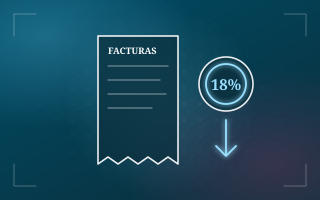

Gastos personales 2027 en Ecuador: tabla de topes y calculadora

Lo que gastas en vivienda, comida, salud, educación, ropa y turismo te puede bajar el impuesto a la renta. Calcula cuánto y mira la tabla de topes.
¿Cuánto te bajan tus gastos del impuesto?
Pon lo que gastas al año por categoría: te decimos tu tope, la rebaja y cómo queda tu impuesto a la renta.
Cálculo referencial con los parámetros 2026 de la calculadora de impuesto a la renta: tabla del SRI 2026, canasta de enero de 2026 (USD 821,80), rebaja del 18 % y aporte al IESS de 9,45 %. El resultado para 2027 cambiará cuando se publiquen la tabla y la canasta de 2027.
Pendiente de publicación oficial. La canasta familiar básica de enero de 2027, que define los topes de 2027, la publica el INEC a inicios de febrero de 2027. Hasta entonces, esta página calcula con los valores confirmados de 2026 y separa lo que todavía no es oficial.
Deducir ingresos o rebajar el impuesto: no es lo mismo
Antes, los gastos personales se restaban de tus ingresos: bajaban la base sobre la que se calculaba el impuesto. Desde 2023 funcionan distinto. Primero se calcula tu impuesto con la tabla del SRI y después se le resta el 18 % de tus gastos, hasta un tope. Es una rebaja directa del impuesto causado, y nunca puede dejarlo en menos de cero: si tu rebaja es mayor que tu impuesto, la diferencia no se devuelve.
Tabla de topes según tus cargas
El tope se mide en canastas familiares básicas de enero de cada año. Estos son los de 2026, con la canasta de USD 821,80. La fila que corresponde a lo que elegiste en la calculadora se marca sola.
| Cargas | Canastas | Tope 2026 | Rebaja máxima 2026 |
|---|---|---|---|
| 0 | 7 | 5.752,60 | 1.035,47 |
| 1 | 9 | 7.396,20 | 1.331,32 |
| 2 | 11 | 9.039,80 | 1.627,16 |
| 3 | 14 | 11.505,20 | 2.070,94 |
| 4 | 17 | 13.970,60 | 2.514,71 |
| 5 o más | 20 | 16.436,00 | 2.958,48 |
| Discapacidad o enfermedad catastrófica | 100 | 82.180,00 | 14.792,40 |
Cuentan como cargas tus padres, tu cónyuge o pareja y tus hijos de hasta 21 años (o con discapacidad, a cualquier edad), siempre que dependan de ti y no ganen más de un salario básico.
¿Qué gastos cuentan?
Seis categorías: vivienda, alimentación, vestimenta, salud, educación (con arte y cultura) y turismo dentro del país. Se suman todas y el total se compara con tu tope. Necesitas facturas a tu nombre o al de tus cargas.
Ejemplos con 0, 1, 2 y 5 o más cargas
Con un sueldo de USD 2.500 al mes y USD 8.000 de gastos en el año. El impuesto sin rebaja es de USD 1.481,75 en todos los casos; lo que cambia es el tope.
| Cargas | Tope | Rebaja | Impuesto del año |
|---|---|---|---|
| 0 | 5.752,60 | 1.035,47 | 446,28 |
| 1 | 7.396,20 | 1.331,32 | 150,43 |
| 2 | 9.039,80 | 1.440,00 | 41,75 |
| 5 o más | 16.436,00 | 1.440,00 | 41,75 |
Discapacidad, enfermedades catastróficas y Galápagos
Si tú o una de tus cargas tiene una discapacidad o una enfermedad catastrófica, rara o huérfana certificada, el tope sube a 100 canastas, sin importar cuántas cargas tengas. En Galápagos, quienes vivieron en la provincia 183 días o más en el año multiplican la canasta por el Índice de Precios al Consumidor Espacial de Galápagos (IPCEG). La calculadora te pide ese índice: si no lo pones, no lo aplica.
¿Cómo lo uso en mi trabajo?
Entrégale a tu empleador la proyección de gastos personales a inicio de año, con el formulario del SRI. Así tu retención mensual ya considera la rebaja y no te descuentan de más. Si quieres ver cuánto te retienen al mes, usa la calculadora de impuesto a la renta: comparte los mismos parámetros que esta.
Preguntas frecuentes
¿Hay un tope por categoría?
Con las reglas vigentes se compara el total de tus gastos con un solo tope, que depende de tus cargas. Igual guarda las facturas de cada categoría.
¿Qué pasa si mis gastos superan el tope?
Solo cuenta hasta el tope. Lo que pase de ahí no te baja más el impuesto.
¿Cuándo salen los topes de 2027?
Cuando el INEC publique la canasta familiar básica de enero de 2027, a inicios de febrero. Apenas salga, actualizamos esta página y la calculadora.
Fuentes
- SRI: formularios e instructivos (proyección y anexo de gastos personales)
- Primicias: lo que podrá descontar como gastos personales en 2026
- HLB Ecuador: gastos personales 2026, el límite que define la rebaja
- Moore Ecuador: normas para empleadores agentes de retención (régimen de Galápagos)
- El Diario: el SRI habilita el formulario de gastos personales 2026
- Siigo: gastos personales en Ecuador
Guía y calculadora informativas con valores 2026. No presentes un cálculo provisional como definitivo: antes de declarar o proyectar tus gastos, confirma los topes vigentes con el SRI.
¿Gestionas la proyección de gastos personales de tus empleados?
Automatiza las retenciones con SquareNet: cada proyección se aplica sola en el impuesto de cada persona, mes a mes.